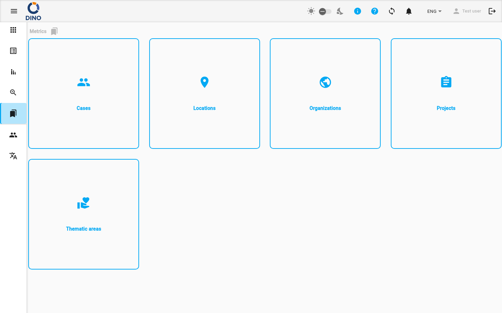

المقاييس
المقاييس هي فئات البيانات المرجعية المستخدمة عبر Dino لتصنيف وتنظيم وتصفية البيانات التي تجمعها. عند ملء نموذج أو إنشاء تقرير، تقوم بتحديد قيم من هذه الفئات — على سبيل المثال، اختيار مشروع أو موقع أو مؤسسة.
قسم المقاييس هو المكان الذي تدير فيه قوائم القيم المتاحة لكل فئة. وهو بمثابة المحور المركزي لجميع بياناتك المرجعية.

أنواع المقاييس
الصفحة الرئيسية تعرض أنواع المقاييس النشطة في تثبيت Dino الخاص بك. يتم عرض كل نوع كبطاقة تحتوي على أيقونة وتسمية. انقر على أي بطاقة لفتح صفحة إدارتها.
اعتمادًا على تكوين نظامك، قد تكون بعض أو كل أنواع المقاييس التالية متاحة:
| نوع المقياس | الوصف |
|---|---|
| المجالات الموضوعية | مجالات العمل أو التجميعات الموضوعية لأنشطتك. |
| الحالات | حالات فردية أو أشخاص أو مستفيدين يتم تتبعهم عبر إرسالات النماذج. |
| المواقع | مواقع جغرافية يتم فيها جمع البيانات أو حدوث الأنشطة. |
| المشاريع | المشاريع التي ترتبط بها إرسالات النماذج والتقارير. |
| المنظمات | المنظمات المشاركة أو المسؤولة عن الأنشطة. |
الوصول إلى المقاييس
يمكنك الانتقال إلى قسم المقاييس بالنقر على المقاييس في قائمة التطبيق الرئيسية.
ما يمكنك فعله
من صفحة المقاييس الرئيسية، يمكنك:
- عرض جميع أنواع المقاييس النشطة المتاحة لبياناتك.
- الانتقال إلى نوع مقياس محدد بالنقر على بطاقته. يأخذك هذا إلى صفحة مخصصة حيث يمكنك إدارة قائمة القيم لذلك النوع (مثل إضافة موقع جديد أو تعديل اسم مشروع).
- استخدام فتات الخبز (مسار التنقل) في أعلى الصفحة لتتبع مسار التنقل داخل قسم المقاييس.
للحصول على إرشادات مفصلة حول إضافة أو تعديل أو حذف القيم ضمن نوع مقياس محدد، راجع التوثيق لكل نوع مقياس: المجالات.
التنقل في قسم المقاييس
- في صفحة المقاييس الرئيسية، راجع البطاقات لكل نوع مقياس متاح.
- انقر على بطاقة نوع المقياس الذي تريد إدارته (مثل المواقع).
- سيتم نقلك إلى صفحة مخصصة لذلك النوع من المقاييس، حيث يمكنك عرض أو إضافة أو تعديل أو حذف قيم محددة.
- استخدم مسار فتات الخبز في أعلى الصفحة للتنقل بسهولة إلى صفحة المقاييس الرئيسية أو إلى أقسام أخرى.
تكوين النظام
يتم تكوين أنواع المقاييس المتاحة بواسطة مسؤول النظام الخاص بك. إذا لم ترَ نوع مقياس محدد تحتاجه، اتصل بمسؤول النظام.